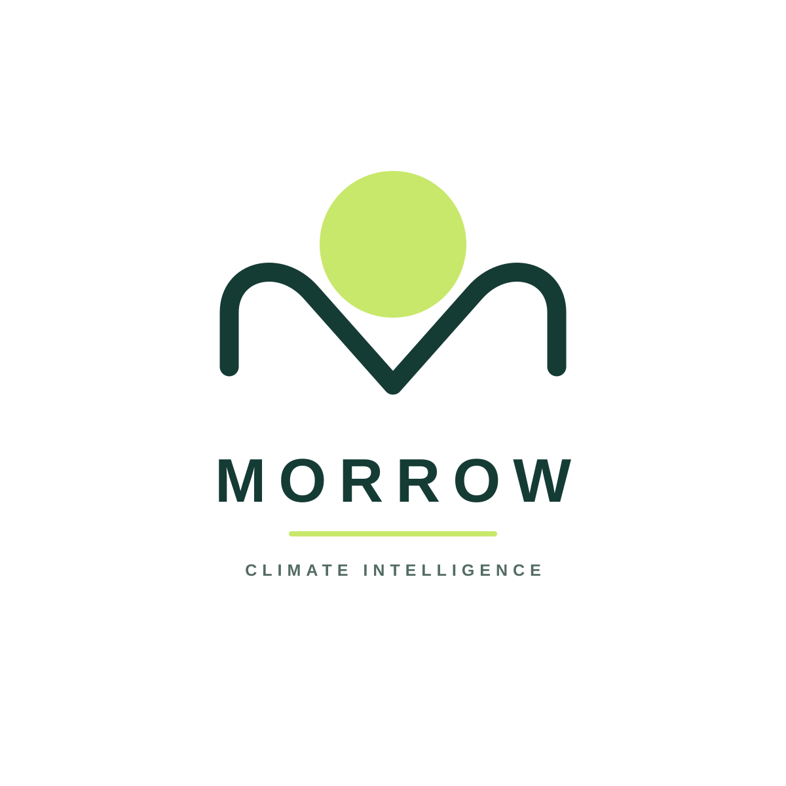
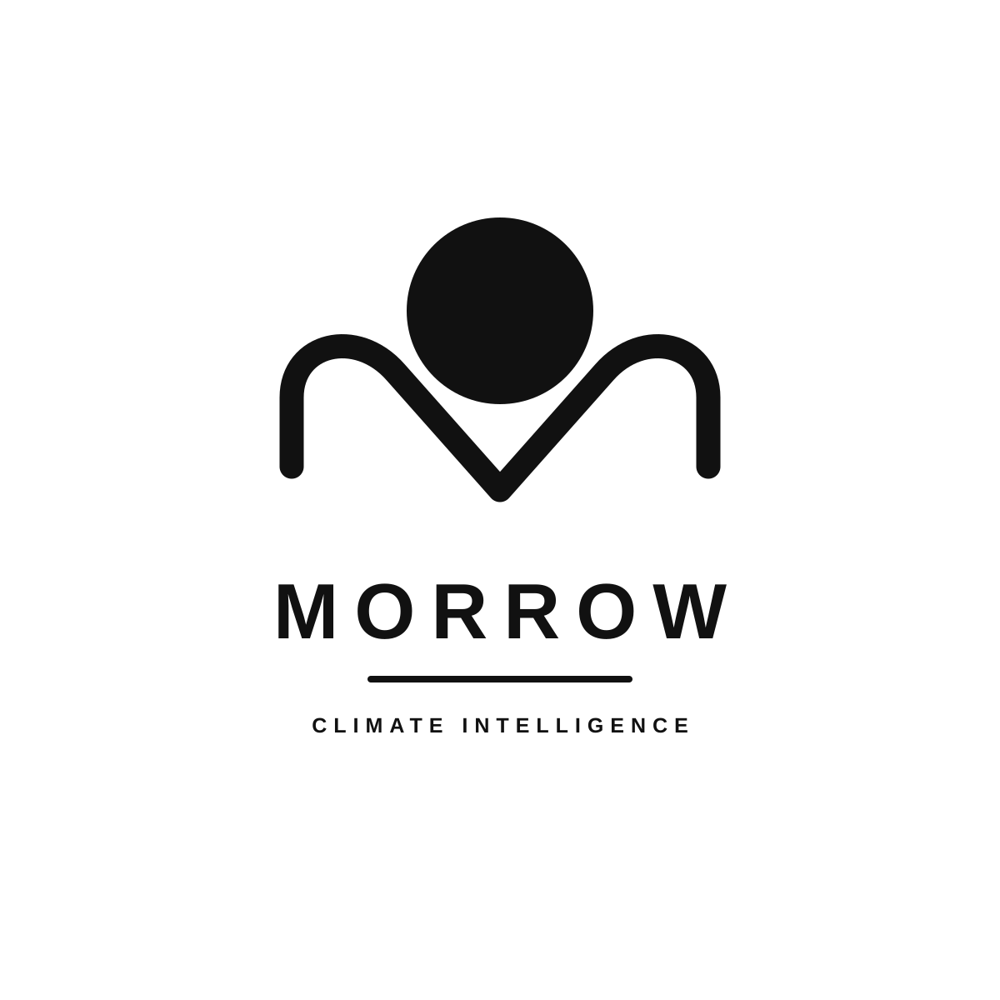

Full colour
Forest green, new-day lime, and a muted descriptor.
A considered identity for a fictional climate-intelligence startup. The custom sunrise “M” pairs forward-looking optimism with a clear, confident wordmark.

Forest green, new-day lime, and a muted descriptor.

Single-ink black for stamps, documents, and one-colour use.

White artwork on transparent background, previewed on forest green.
Morrow is a fictional climate-intelligence startup helping communities build a brighter, lower-carbon future. The rising sun and custom geometric “M” combine optimism with forward momentum; deep forest green signals trust and sustainability, while lime adds the energy of a new day.